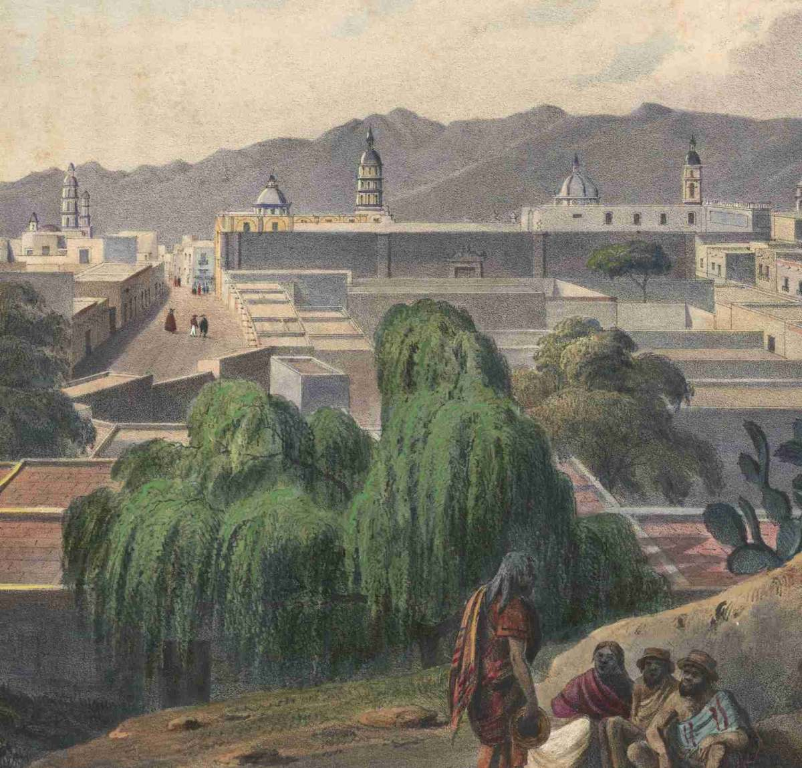
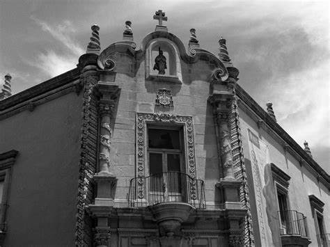

San Luis Potosí, fundada el 3 de noviembre de 1592 por Diego de Velasco en la región de Tangamanga, tuvo sus orígenes en una zona habitada desde tiempos prehistóricos por diversas culturas indígenas, como los huachichiles, chichimecas y guachichiles.
Durante la época colonial, San Luis Potosí se destacó como uno de los principales centros mineros de la Nueva España, gracias a la explotación de minas de oro y plata en la región. Este auge minero propició un rápido crecimiento de la ciudad y la construcción de numerosos edificios coloniales que aún se conservan.
En el siglo XIX, San Luis Potosí desempeñó un papel crucial en la lucha por la independencia de México. La ciudad fue sede de importantes eventos históricos, como el Congreso de Chilpancingo en 1813, donde se redactó la primera Constitución de México, así como de batallas clave en el proceso independentista.
En la actualidad, San Luis Potosí es una ciudad moderna y próspera que conserva su rica historia y patrimonio cultural. Además de su legado colonial, la ciudad ha experimentado un importante crecimiento económico y se ha convertido en un centro industrial y comercial en el corazón de México. Su diversidad cultural, arquitectónica y natural la convierte en un destino turístico atractivo para visitantes de todo el mundo.